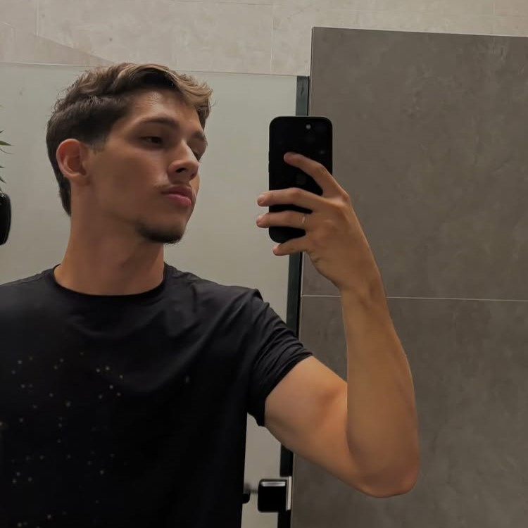
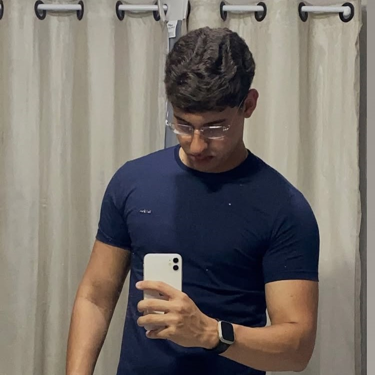
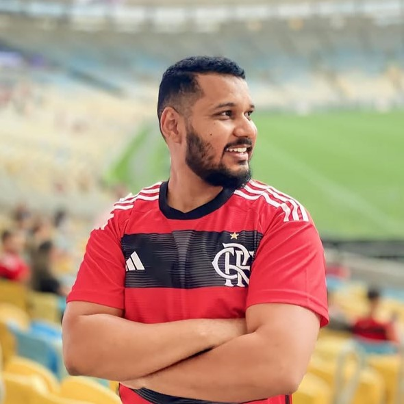

Conheça o time!
Conheça os profissionais que entregam o melhor serviço para você!

Juan Cauê
Juan Cauê, com 18 anos, é um programador talentoso que se destaca pela criatividade e dedicação. Sua paixão pela tecnologia o leva a buscar soluções inovadoras para problemas complexos. Ele possui grande habilidade em trabalho em equipe, colaborando de forma eficaz. Juan enfrenta desafios com determinação e agrega valor aos projetos em que atua. Seu entusiasmo promete torná-lo uma referência na área de programação.
Programador e colaborador

Gustavo Targino
Gustavo Targino, também com 18 anos, é um jovem programador que se destaca pela dedicação e foco na excelência. Ele busca soluções práticas e eficientes, sempre com uma abordagem criativa. Gustavo é disciplinado e possui grande habilidade em trabalho em equipe, colaborando de forma eficaz. Ele aplica seus conhecimentos de forma inovadora, agregando valor aos projetos em que atua. Sua visão e determinação o posicionam como uma promessa no mundo da tecnologia.
Programador e colaborador

Anderson Pablo
Anderson Pablo é um orientador experiente e dedicado à formação de novos talentos na tecnologia. Ele é reconhecido por motivar e guiar seus orientandos com paciência e liderança. Anderson alia conhecimento técnico à didática, promovendo o aprendizado constante. Sua abordagem colaborativa cria um ambiente ideal para soluções inovadoras. Com seu apoio, os projetos atingem resultados excepcionais.